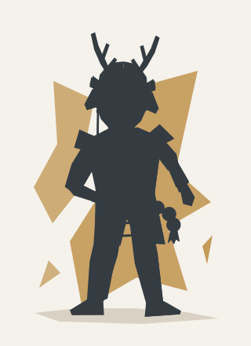
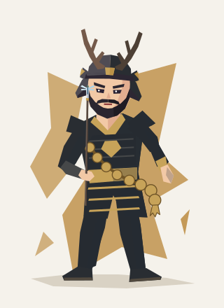

研究用プレビュー / 診断本番とは別画面
本番相当コンテナ統合試験
375px幅の結果カード、正方形の小カード、図鑑相当サイズで、大数珠候補の見え方と共通モーションを確認します。
あなた自身の回答から見えるあなた


本多忠勝
猛猛将系
考えるより先に体が前に出る
全力でぶつかる。なぜか敵にもモテる。
偉世界の偉人性格診断 スマホ研究表示
正方形 contain 表示
研究用のスマホ確認画面です。診断の回答や個人情報は含みません。外部DB、ログイン、課金、アクセス解析はありません。「動きを抑える」だけはこの画面の端末内設定を利用します。